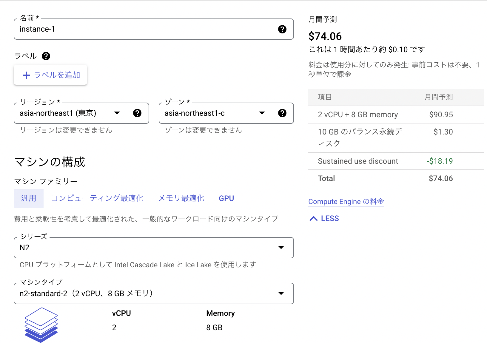

TWS-004「心理学研究における研究室インフラの整備」
日本心理学会(2022年)
仮想マシンの準備
Google Cloud Platform（GCP)，Amazon Web Services(AWS)，Microsoft Azure，「さくらインターネット」など，現状では様々なクラウドコンピューティングサービスがある。
国里は，Amazon Web Services(AWS)とMicrosoft Azureはほとんど使ったことがなく，過去２年半ほどGoogle Cloud Platform（GCP)を使い，今年は主に「さくらインターネット」をゼミでは使っている。
Google Cloud Platform（GCP)で困ることはなかったが，円安と月によって料金が返送するのが，ゼミのサーバーの利用法としてはちょっとやりにくかったので，今年度からは「さくらインターネット」にしている。
今回のTWSでは一時的にサーバーを立てる関係上，Google Cloud Platform（GCP)のe2-mediumで準備をしてみました。月間の利用料がでています。RStudio serverとJupyterHubなどで重い計算をせず，とりあえず試す分にはこれでもいけます。

実際にゼミで複数人が同時にアクセスする場合は，

これくらいならゼミ生が使っても問題がない。
E2は頼りないが安い。今回のデモでは，2-mediumを使う。
ブートディスクを「変更」する。
ファイヤーウォールの設定(「HTTP トラフィックを許可する」と「HTTPS トラフィックを許可する」にチェックをいれる)して，「作成」をクリックするとインスタンスが準備される
インスタンスができたら，SSHで接続する。
インスタンスのポート設定
- GCPの「VPCネットワーク」→「ファイヤーウォールルール」で「ファイアウォール ルールの作成」を押して新しいSSHポートを設定します。名前やターゲットタグは好きな名前にしてください（私は適当に”ssh-allow-port”って名前にしています）。優先度は
1000にして，トラフィックの方向は上り，一致した時のアクションは許可，ソースのIP範囲は，0.0.0.0/0とします。プロトコルはtcpでポートに好きなポート番号を入れます。
- 設定した新しいファイアウォールルールを適用するため，VMインスタンスをクリックして，「編集」ボタンを押して，ネットワークタグに上記で決めたターゲットタグを入れて保存します。
- 通常のSSH接続(22portを使用)をします（「Compute Engine」の「VMインスタンス」の当該VMインスタンスの右端にある「SSH」をクリックします）。
- コンソールっぽい画面が出てきたら，以下のコマンドを打って，vimでsshdの設定ファイルを開きます。
sudo vim /etc/ssh/sshd_config- バンっと画面に文字が出てきてビビるかもしれませんが，落ち着いて，
# Port 22を探して，iをタイプします（文字が挿入できるようになります）。#をはずして，22の代わりに自分が使いたいポート番号を入れます(Port 自分の使いたい番号)。入力ができたら，escキーをタイプしてから，:wqとタイプします（保存されます）。
- sshdの設定を反映させるために，以下のコマンドで再起動させます。
sudo systemctl restart sshd- ここで今22番portで開いた画面はそのままにして（閉じない），VMインスタンスの右端にある「SSH」の下矢印を押して，「ブラウザウィンドウでカスタムポートを開く」をクリックします。入力欄が出てくるので，そこに先程設定した新しいSSHのポートを入力して開きます。
- 新しいSSHのポートでも開けたら，22番portを閉じます。もう一度，「VPCネットワーク」→「ファイヤーウォールルール」で「ファイアウォール ルールの作成」を押します。名前やターゲットタグは好きな名前にしてください（私は適当に”disallow-ssh22”って名前にしています)。優先度は
1000にして，トラフィックの方向は上り，一致した時のアクションは拒否，ソースのIP範囲は，0.0.0.0/0とします。プロトコルはtcpでポートは22にします。
- VMインスタンスをクリックして，「編集」を押し，ネットワークタグに上記で決めたターゲットタグを入れて保存します(これで，httpのタグ，httpsのタグ，新しいsshポートのタグ，22番ポートを閉じるタグの４つがあると思います)。
- 通常のSSH接続(22番ポート)をしても接続できず，「ブラウザウィンドウでカスタムポートを開く」で自分で設定したSSHポートを使って接続できたら成功です。
- ちなみに，SSH接続後に以下を入力するとアクセス状況を見れます（
fで次の画面に進んで，qで閉じます）。
sudo less /var/log/auth.logDomainの入手とサブドメインの設定
- Googleドメインなどのサービスを使って好きなドメイン名を入手する
Docker-Desktopのインストール
- Docker社のドキュメントに従ってインストールする。
- 必要なソフトのインストール
sudo apt-get update
sudo apt-get install ca-certificates curl gnupg lsb-release- GPGキーの追加とリポジトリの用意
sudo mkdir -p /etc/apt/keyrings
curl -fsSL https://download.docker.com/linux/ubuntu/gpg | sudo gpg --dearmor -o /etc/apt/keyrings/docker.gpg
echo "deb [arch=$(dpkg --print-architecture) signed-by=/etc/apt/keyrings/docker.gpg] https://download.docker.com/linux/ubuntu $(lsb_release -cs) stable" | sudo tee /etc/apt/sources.list.d/docker.list > /dev/null- Docker Engineのインストール
sudo apt-get update
sudo apt-get install docker-ce docker-ce-cli containerd.io docker-compose-pluginTraefikの準備
- TraefikのBASIC認証で使うhtpasswdを使えるようにする。
https://zenn.dev/pitekusu/books/traefik-pitekusu
sudo apt install apache2-utils- ユーザー名とパスワードを変更して実行
htpasswd -nb ユーザー名 パスワード- ネットワークの準備をする
sudo docker network create traefik-network- Traefikの作業フォルダを作ります
mkdir traefik
cd traefik- 以下を実行して，traefik.ymlを用意する
sudo vim traefik.yml- 「メールアドレス@example.com」は自分のアドレスに変えてコピペ，「Esc」を押して，「:wq」をタイプすることで保存して閉じる
entryPoints:
web:
address: :80
http:
redirections:
entryPoint:
to: websecure
scheme: https
websecure:
address: :443
api:
insecure: false
dashboard: true
providers:
docker:
exposedByDefault: false
certificatesresolvers:
myresolver:
acme:
httpChallenge:
entryPoint: web
email: "メールアドレス@example.com"
storage: "/letsencrypt/acme_myresolver.json"
log:
filePath: "/logs/traefik.log"
format: json
level: INFO
accessLog:
filePath: "/logs/access.log"
format: json- 以下を実行して，compose.yml を用意する
sudo vim compose.yml- your.domainは自分の使っているドメインにしてコピペ，「アカウント名とハッシュ値を貼り付け」もコピオペする（その際に， \(は全て\) $にしないと動かない落とし穴があるので注意する）。「Esc」を押して，「:wq」をタイプすることで保存して閉じる
services:
traefik:
image: traefik:latest
container_name: traefik
restart: always
ports:
- "80:80"
- "443:443"
networks:
- traefik-network
environment:
TZ: Asia/Tokyo
labels:
traefik.enable: true
traefik.http.routers.dashboard.rule: Host(`traefik.your.domain`)
traefik.http.routers.dashboard.entrypoints: websecure
traefik.http.routers.dashboard.tls.certresolver: myresolver
traefik.http.routers.dashboard.service: api@internal
traefik.http.routers.dashboard.middlewares: auth
traefik.http.middlewares.auth.basicauth.users: アカウント名とハッシュ値を貼り付け
volumes:
- letsencrypt_data:/letsencrypt
- /var/run/docker.sock:/var/run/docker.sock:ro
- ./traefik.yml:/etc/traefik/traefik.yml:ro
- /var/log:/logs
volumes:
letsencrypt_data:
networks:
traefik-network:
external: true- compose.ymlしたがって実行する。
sudo docker compose up -dtraefik.your.domainにアクセスすると，アカウント認証があるが，設定したものを入力して，以下のようなダッシュボードがでてきたら，成功している。
一度ホームディレクトリに戻る
cd ..RStudio serverを用意する
- まず，ホームディレクトリ内にrstudio_composeディレクトリを作って，そちらに移動し，compose.ymlを作ります。
sudo mkdir rstudio_compose
cd rstudio_compose
sudo vim compose.ymlvimで開いたdocker-compose.ymlに，以下を変更したその下のコードを貼り付けてください。改変した内容をコピペできたら，escキーをタイプして， :wq とタイプします（保存されます）。
- 「your.domain」のドメイン名を自分のものに変更する。
- rstudioのユーザーIDとパスワードを変更する。
- volumesの左側の./rstudioは，.のところをGCP上でpwdをした時にでてくるカレントディレクトにする必要があるかもしれません。
-
services:
rstudio:
image: ykunisato/paper-r:latest
container_name: rstudio
networks:
- traefik-network
container_name: rstudio
restart: always
environment:
- USER=ユーザー名
- PASSWORD=パスワード
volumes:
- ./rstudio:/home/rstudio
labels:
traefik.enable: true
traefik.http.routers.rstudio.rule: Host(`rstudio.your.domain`)
traefik.http.routers.rstudio.entrypoints: websecure
traefik.http.routers.rstudio.tls.certresolver: myresolver
networks:
traefik-network:
external: true以下を実行して，用意したコンテナを起動します。イメージのダウンロードなどにしばらく時間がかかります。doneとでてきたら，終了です。
- compose.ymlしたがって実行する。
sudo docker compose up -d- rstudio.your.domainにアクセスして，RStudioのログイン画面が出てきたら，一度ホーム画面に戻る
cd ..JupyterHubを用意する
- まず，ホームディレクトリ内にjupyterhub_composeディレクトリを作って，そちらに移動し，compose.ymlを作ります。
mkdir jupyterhub_compose
cd jupyterhub_compose
sudo vi compose.yml以下をコピペして，:wqする。
services:
jupyterhub:
image: ykunisato/ccp-lab-hub
container_name: jupyterhub
networks:
- traefik-network
restart: always
volumes:
- /home/ubuntu/jupyterhub:/home
labels:
traefik.enable: true
traefik.http.routers.jupyterhub.rule: Host(`jupyterhub.your.domain`)
traefik.http.routers.jupyterhub.entrypoints: websecure
traefik.http.routers.jupyterhub.tls.certresolver: myresolver
networks:
traefik-network:
external: trueJupyter Hubのユーザー追加と設定
- コンテナ内に入ってユーザーを追加する(XXXはユーザー名，途中でパスワード聞かれる)。
sudo docker exec -it jupyterhub bash
adduser XXX作成したアカウントをsuにして，juliaを起動する。
su XXX
julia以下をコピペして，juliaを設定する。
ENV["PYTHON"] = "";using Pkg;Pkg.update(); Pkg.add(["IJulia","PyCall"]); Pkg.build(["IJulia","PyCall"]); Pkg.add(["DataFrames","PyPlot","Distributions","Statistics","JuliaFormatter","CPUTime","Gadfly","GLM","Optim","Plots","Query","RDatasets","SpecialFunctions","StatisticalRethinking","StatsBase","StatsFuns","StatsPlots","AdvancedHMC","BAT","Bijectors","CmdStan","DiffEqBayes","DistributionsAD","ForwardDiff","MCMCChains","MeasureTheory","ParameterizedFunctions","Turing","LinearAlgebra","DifferentialEquations","Roots","SymPy","ForneyLab"]);Pkg.precompile()- compose.ymlしたがって実行する。
sudo docker compose up -d- jupyterhub.your.domainにアクセスして，jupyterのログイン画面が出てきたら，一度ホーム画面に戻る
cd ..JATOSを用意する
- まず，ホームディレクトリ内にjatos_composeディレクトリを作って，そちらに移動し，compose.ymlを作ります。
sudo mkdir jatos_compose
cd jatos_compose
sudo vi compose.ymljatos.your.domainを変更して，以下をコピペして，:wqする。
services:
jatos:
image: jatos/jatos:latest
container_name: jatos
networks:
- traefik-network
restart: always
labels:
traefik.enable: true
traefik.http.routers.jatos.rule: Host(`jatos.your.domain`)
traefik.http.routers.jatos.entrypoints: websecure
traefik.http.routers.jatos.tls.certresolver: myresolver
networks:
traefik-network:
external: true- compose.ymlしたがって実行する。
sudo docker compose up -dJATOSは立ち上がったらすぐに，admin/adminでログインして，アドミンのパスワードを変更する。
- ログインして，アドミンのパスワードが設定できたら，一度ホーム画面に戻る
cd ..WordPressを用意する
- まず，ホームディレクトリ内にwordpress_composeディレクトリを作って，そちらに移動し，compose.ymlを作ります。
sudo mkdir wordpress_compose
cd wordpress_compose
sudo vi compose.ymlwordpress.your.domainを変更して，ルートのパスワードとDBのパスワードを設定してコピペして，:wqする。
services:
db:
image: mysql:5.7
container_name: wp-db
volumes:
- db_data:/var/lib/mysql
networks:
- default
restart: always
environment:
MYSQL_ROOT_PASSWORD: ルートのパスワード
MYSQL_DATABASE: wordpress
MYSQL_USER: wordpress
MYSQL_PASSWORD: DBのパスワード
wordpress:
depends_on:
- db
image: wordpress:latest
container_name: wordpress
networks:
- traefik-network
- default
restart: always
environment:
WORDPRESS_DB_HOST: db:3306
WORDPRESS_DB_USER: wordpress
WORDPRESS_DB_PASSWORD: DBのパスワード
labels:
traefik.enable: true
traefik.http.routers.wordpress.rule: Host(`wordpress.your.domain`)
traefik.http.routers.wordpress.entrypoints: websecure
traefik.http.routers.wordpress.tls.certresolver: myresolver
volumes:
db_data:
networks:
traefik-network:
external: true- compose.ymlしたがって実行する。
sudo docker compose up -d- WordPressが立ち上がったのを確認したら，WordPressのインストールとアドミンアカウントの設定を行う。一度ホームに戻る
cd ..- プラグインのSensei-LMSをインストールして，有効化する。